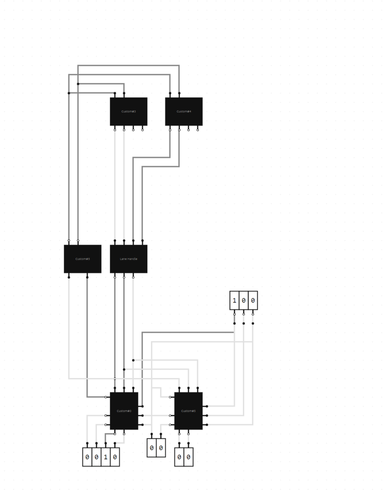

CONCEPT
This was meant to be my most ambitious project yet. Basically, I'm working on a simple kind of "computer" where you have circuitry that has an IF condition, and if said condition is true, it executes an action. Sadly, there must be something wrong with my world in BOOLR because it keeps glitching out, preventing me from actually completing this, even though I'm confident I know how to. I'll provide a screenshot of what I did finish, but will save the technical explanation for when I eventually remake this in Logic World.
